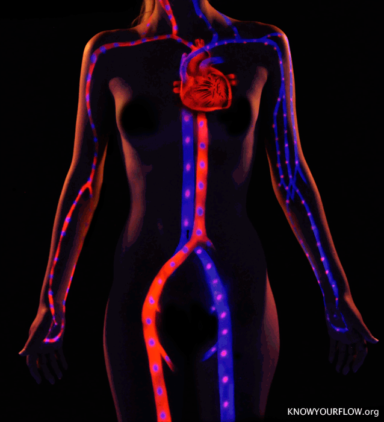

¿que es la biofisica?
La biofísica es la disciplina que se ocupa del estudio de la biologia desde el punto de vista de la fisica (de allí su nombre conjunto). Esta naturaleza doble o dual hace que no pueda definirse si se trata de una rama de la física próxima a la biología, o una rama de la biología próxima a la física.

La biofísica es, en ese sentido, una de las primeras disciplinas científicas que combinan diversos enfoques de ciencias elementales, lo cual es una tendencia en alza en el mundo científico contemporáneo. Los resultados obtenidos por esta disciplina son de interes tanto para la biología, como para la física aplicada.
Objeto de estudio de la biofísica
El objeto de estudio de la biofísica puede definirse como el ámbito físico de la vida o la aplicación de la física a los seres vivientes. En gran medida, considera su objeto de estudio desde la perspectiva física de la mecánica clásica, o sea, la mecánica newtoniana.
Implica la exploración de fenomenos comunes en el mundo de la física, como la electricidad, la luz, el magnetismo, entre otros, pero vinculados al mundo de la biología: la bioelectricidad, la bioluminiscencia, el biomagnetismo, etcétera.
TEMAS BIOLOGÍA

deberiamos de saber que:
La biofísica estudia la vida en todos sus niveles, desde los átomos y moleculas hasta las células, organismoa y ambiente. A medida que progresa la física y la biología, los biofísicos encuentran nuevas áreas para explorar y aplicar su experiencia, crear nuevas herramientas y sobre todo aprender.